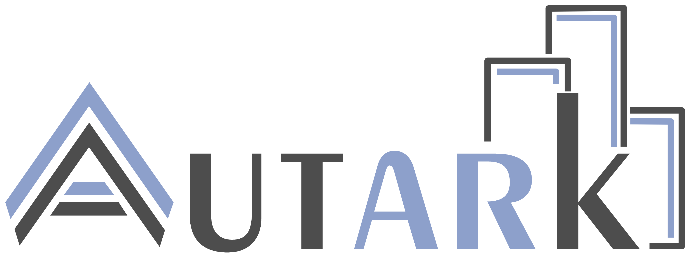

Project autk-db
Expand description
Autark: A portable UTK-based visualization framework

Autark is implemented in TypeScript for lightweight client-side execution with built-in access to OpenStreetMap geometry data for exploring spatial features directly in the browser. It consists of the following sub-projects:
autk-db: A spatial database that handles physical and thematic urban datasets.autk-map: A 3D map visualization library.autk-plot: A D3.js/Vega-lite wrapper to build abstract visualizations.
The example/ directory is included with example codes that can be used for testing or demonstration purposes.
Requirements
You’ll need Node.js installed to build and run this project. You can install it via Conda Forge (Windows), Homebrew (macOS), apt-get (Debian/Ubuntu) or the official site.
To install Node.js:
# Windows
conda install -c conda-forge nodejs
# macOS
brew install node
# Debian/Ubuntu
sudo apt-get install nodejs
Installing, Running, and Building with Make
Installation
Install Make (for running predefined build and dev commands):
# Windows
conda install anaconda::make
# macOS
xcode-select --install
# Debian/Ubuntu
sudo apt-get install build-essential
Building and Running
To install required packages:
make install
To run the development server:
make dev
To clean build artifacts:
make clean
Publishing packages
Autark is available through npm packages. Publishing recently-made changes to npm can be done running the commands below.
First, ensure you are logged into your npm account:
npm login
then, publish the desired module:
make publish LIB=autk-module
autk-module can assume three values: autk-map, autk-db, autk-plot.
Interaction Controls
You can explore and modify the map using both keyboard and mouse:
Keyboard Shortcuts
| Key | Action |
|---|---|
s |
Cycle through map styles (default, light, dark) |
Mouse Actions
| Action | Effect |
|---|---|
| Double Click | Select object in the currently active layer (if selectable) |
Notes
-
WebGPU is required to run this project. In Chrome or Edge (v113+), it's enabled by default. In Firefox, WebGPU is only available in Nightly builds and must be explicitly enabled::
- Download and install Firefox Nightly.
- Visit
about:config. - Set
dom.webgpu.enabledtotrue. - (Optional) You may also need to enable
gfx.webgpu.enabledandgfx.webgpu.force-enabled. - Restart Firefox.
Classes§
- SpatialDb
SpatialDb class provides methods to interact with a DuckDB database for spatial data operations.